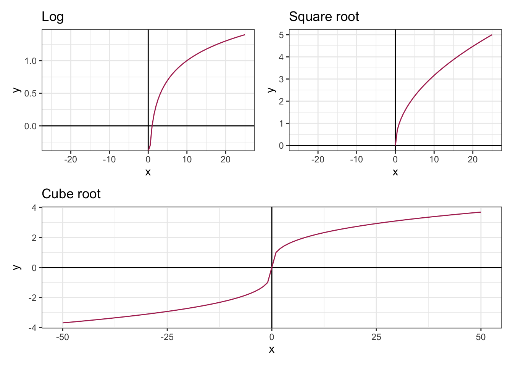

Methods for Transforming Data to Normal Distribution
2020-07-31Introduction
Before we get deep into transforming skewed data, let’s quickly talk around the normal distribution and skewness coefficient, or have a look at my previous post to have a detailed insight on different types of distribution of data here.
The normal distribution is a statistical concept that denotes the probability distribution of data which has a bell-shaped curve. That is, the normal distribution is symmetrical on both sides where mean, median, and mode are equal. The skewness coefficient of a normal distribution is 0 that can be used as a reference to measure the extent and direction of deviation of the distribution of a given data from the normal distribution.
A positively skewed data has a skewness of greater than 0, whereas the negatively skewed data has a skewness of lower than 0. In other words, the data points tend to concentrate around the lower values in a positively skewed data and the mean is greater than the median, where the opposite is true in a negatively skewed data.
Oftentimes the real-life data do not follow the normal distribution which undermines the validity of the parametric statistical models and inferences. Thus, some sort of modification is needed. That is where the data transformation comes in to make the distribution of the data as normal as possible so that the statistical inferences drawn from the data become more valid by reducing the skewness of the original data.
In this post, I try to cover the most common methods of transforming a skewed distribution into a normal distribution, and the foundational step you must consider before deciding which method to apply.
Loading required packages:
library(data.table) # Enhanced data.frame
library(dplyr) # Data manipulation
library(tidyr) # Reshape the data between wide and long formats
library(ggplot2) # Data visualization
library(patchwork) # Re-arrange ggplot2 plots
library(moments) # Calculating skewness coefficient
library(gt) # Creating an object of class "gt" tableDealing with the positive skewness
The common methods for transforming positively skewed data to normal distribution are, but not limited to, square root transformation, cube root transformation, and log transformation.
I use the GDP per capita as an example. You can download the data from here.
| Country Name | Indicator Name | value | |
|---|---|---|---|
| 1 | Afghanistan | GDP per capita (current US$) | 502.1 |
| 2 | Angola | GDP per capita (current US$) | 2,973.6 |
| 3 | Albania | GDP per capita (current US$) | 5,352.9 |
| 4 | Andorra | GDP per capita (current US$) | 40,886.4 |
| 5 | Arab World | GDP per capita (current US$) | 6,580.1 |
| 6 | United Arab Emirates | GDP per capita (current US$) | 43,103.3 |
| 7 | Argentina | GDP per capita (current US$) | 10,006.1 |
| 8..214 | |||
| 215 | Vietnam | GDP per capita (current US$) | 2,715.3 |
| 216 | Vanuatu | GDP per capita (current US$) | 3,058.1 |
| 217 | Samoa | GDP per capita (current US$) | 4,315.9 |
| 218 | Kosovo | GDP per capita (current US$) | 4,417.5 |
| 219 | South Africa | GDP per capita (current US$) | 6,001.4 |
| 220 | Zambia | GDP per capita (current US$) | 1,291.3 |
| 221 | Zimbabwe | GDP per capita (current US$) | 1,464.0 |
| Source: The World Bank | |||
| Last update: 2020-07-01. | |||
Let’s illustrate the distribution of the above data to see what we are dealing with.
df <- select(gdp_pc, gdp_pc = value)
ggplot(df, aes(x = gdp_pc)) +
geom_histogram(aes(y = ..density..), fill = "coral", color = "gray", alpha = 0.8) +
geom_density() +
theme_bw() + labs(x = NULL, title = 'GDP Per Capita')It certainly does not follow the normal distribution and is
positively skewed and most of the data points tend to
concentrate around the lower values. That is, most countries
have a lower GDP per capita.
The extent of the skewness, however, is not known yet. To
measure the skewness you can use skewness()
function from the moments package.
## [1] 2.096777Since the skewness coefficient is greater than one, it denotes the data is highly skewed. Let’s transform the data into normal distribution using different methods.
1) Square root transformation: The square
root transformation involves converting each value to its square
root. That is, converting \({(x)}\) to \({({x}^{1/2})}\).
2) Cube root transformation: This method
involves converting \({(x)}\)
to \({(x^{1/3})}\).
3) Log transformation: Different types of
logarithmic transformation can be applied, including \(x\) to \({log_{10}x}\); \(x\) to \({log_{2}x}\), \(x\) to \({log_{e}x}\) or \({ln}\ {x}\).
df <- df %>%
mutate(sqrt_gdp_pc = sqrt(gdp_pc),
cbrt_gdp_pc = (gdp_pc)^(1/3),
log_gdp_pc = log(gdp_pc)
)
do.call(rbind, (lapply(df, skewness))) %>%
data.table(keep.rownames = T) %>%
mutate(Method = factor(case_when(rn %in% "gdp_pc" ~ 1, rn %in% "sqrt_gdp_pc" ~ 2, rn %in% "cbrt_gdp_pc" ~ 3, rn %in% "log_gdp_pc" ~ 4),
labels = c("Original data", "Square Root Transformation", "Cube Root Transformation", "Log Transformation"),
ordered = T)) %>%
gt() %>%
cols_hide(columns = vars(rn)) %>%
cols_move_to_start(columns = vars(Method)) %>%
# tab_row_group(group = "Methods to reduce skewness", rows = 2:4) %>%
# tab_row_group(group = "Original Dat", rows = 1) %>%
fmt_number(columns = vars(V1),decimals = 3) %>%
cols_label(V1 = "Skewness Coefficient") %>%
tab_style(style = cell_fill(color = "maroon", alpha = 1), locations = cells_body(columns = vars(V1), rows = V1 > 2)) %>%
tab_style(style = cell_fill(color = "maroon", alpha = 0.7), locations = cells_body(columns = vars(V1), rows = V1 > 1 & V1 < 2)) %>%
tab_style(style = cell_fill(color = "maroon", alpha = 0.5), locations = cells_body(columns = vars(V1), rows = V1 > 0.5 & V1 < 1)) %>%
tab_style(style = cell_fill(color = "maroon", alpha = 0.3), locations = cells_body(columns = vars(V1), rows = V1 < 0.5))| Method | Skewness Coefficient |
|---|---|
| Original data | 2.097 |
| Square Root Transformation | 1.092 |
| Cube Root Transformation | 0.737 |
| Log Transformation | −0.032 |
The square root transformation reduces the skewness coefficient remarkably from 2.1 to 1.09, however, it is still greater than 1. It is reduced to 0.74 by applying the cube root transformation, whereas the log transformation reduces the skewness to -0.032.
Let’s explore more the variability of the data.
do.call(cbind, (lapply(df, summary))) %>%
data.table(keep.rownames = T) %>%
gt(rowname_col = "rn") %>%
tab_spanner(label = "Methods to Reduce Skewness", columns = vars("sqrt_gdp_pc", "cbrt_gdp_pc", "log_gdp_pc")) %>%
tab_spanner(label = "Original Data", columns = vars("gdp_pc")) %>%
fmt_number(columns = ends_with("gdp_pc"), decimals = 3) %>%
cols_label(gdp_pc = "GDP per capita", sqrt_gdp_pc = "Square root transformation", cbrt_gdp_pc = "Cube root transformaiton", log_gdp_pc = "Log transformation") %>%
tab_style(style = cell_fill(color = "maroon", alpha = 1), locations = cells_body(columns = vars(gdp_pc))) %>%
tab_style(style = cell_fill(color = "maroon", alpha = 0.7), locations = cells_body(columns = vars(sqrt_gdp_pc))) %>%
tab_style(style = cell_fill(color = "maroon", alpha = 0.5), locations = cells_body(columns = vars(cbrt_gdp_pc))) %>%
tab_style(style = cell_fill(color = "maroon", alpha = 0.3), locations = cells_body(columns = vars(log_gdp_pc)))## Warning: Since gt v0.3.0, `columns = vars(...)` has been deprecated.
## • Please use `columns = c(...)` instead.
## Since gt v0.3.0, `columns = vars(...)` has been deprecated.
## • Please use `columns = c(...)` instead.
## Since gt v0.3.0, `columns = vars(...)` has been deprecated.
## • Please use `columns = c(...)` instead.
## Since gt v0.3.0, `columns = vars(...)` has been deprecated.
## • Please use `columns = c(...)` instead.
## Since gt v0.3.0, `columns = vars(...)` has been deprecated.
## • Please use `columns = c(...)` instead.
## Since gt v0.3.0, `columns = vars(...)` has been deprecated.
## • Please use `columns = c(...)` instead.| Original Data | Methods to Reduce Skewness | |||
|---|---|---|---|---|
| GDP per capita | Square root transformation | Cube root transformaiton | Log transformation | |
| Min. | 261.247 | 16.163 | 6.393 | 5.565 |
| 1st Qu. | 1,994.906 | 44.664 | 12.589 | 7.598 |
| Median | 6,564.920 | 81.024 | 18.724 | 8.789 |
| Mean | 14,536.951 | 99.495 | 20.439 | 8.738 |
| 3rd Qu. | 17,401.722 | 131.916 | 25.914 | 9.764 |
| Max. | 114,704.594 | 338.681 | 48.588 | 11.650 |
In the original data, the distance between the 1st quartile and the minimum value is 1733.7 and the distance between the 3rd quartile and the maximum value is 97302.9 prior to any kind of transformations. Nevertheless, it decreases at different levels after applying various forms of transformation. For instance, the difference between the 3rd quartile and the maximum value is 206.8 after the square root transformation, it is 22.7 after the cube root transformation, and it is 1.9 after the log transformation.
Another point of consideration is the distance between the mean and the median. The mean is 7972.03 points away from the median in the original data, whereas it is 18.5 after the square root transformation, 1.71 after the cube root transformation, and -0.05 after the log transformation.
Let’s make a quick visualization to better understand the shape of the distribution after applying each kind of above-mentioned methods.
df <- df %>%
pivot_longer(cols = everything(), names_to = "method", values_to = "values") %>%
mutate(method = factor(case_when(method == "gdp_pc" ~ 1, method == "sqrt_gdp_pc" ~ 2, method == "cbrt_gdp_pc" ~ 3, method == "log_gdp_pc" ~ 4),
labels = c("Original data", "Square root transformation", "Cube root transformation", "Log transformation")))
vline <- summarise(group_by(df, method), mean = mean(values), median = median(values))
df %>%
ggplot(aes(x = values)) +
geom_histogram(aes(y = ..density..), fill = "coral", alpha = 0.8, color = "gray") +
geom_density() + theme_bw() +
facet_wrap(~method, nrow = 2, scales = "free") +
geom_vline(data = vline, aes(xintercept = mean), linetype = "dotted") +
geom_vline(data = vline, aes(xintercept = median), linetype = "dashed") +
labs(x = NULL, caption = "Mean = Dotted line\nMedian = Dashed line") +
theme(strip.text = element_text(size = 15, face = "bold"))As the above plots depict, the log transformation is pretty awesome. It reduces the skewness and improves the normality of the data more rapidly compared to the cube root or square root transformation.
Dealing with the negative skewness
The important caveat in applying the above methods to reduce the skewness is the data should be skewed to the right side, otherwise those methods do not transform the distribution of the data to normal.
Let’s use the life expectancy data from the World Bank as an example. You can download the data from here.
| Country Name | Indicator Name | value | |
|---|---|---|---|
| 1 | Aruba | Life expectancy at birth, total (years) | 76.2 |
| 2 | Afghanistan | Life expectancy at birth, total (years) | 64.5 |
| 3 | Angola | Life expectancy at birth, total (years) | 60.8 |
| 4 | Albania | Life expectancy at birth, total (years) | 78.5 |
| 5 | Arab World | Life expectancy at birth, total (years) | 71.8 |
| 6 | United Arab Emirates | Life expectancy at birth, total (years) | 77.8 |
| 7 | Argentina | Life expectancy at birth, total (years) | 76.5 |
| 8..236 | |||
| 237 | Vanuatu | Life expectancy at birth, total (years) | 70.3 |
| 238 | Samoa | Life expectancy at birth, total (years) | 73.2 |
| 239 | Kosovo | Life expectancy at birth, total (years) | 72.2 |
| 240 | Yemen, Rep. | Life expectancy at birth, total (years) | 66.1 |
| 241 | South Africa | Life expectancy at birth, total (years) | 63.9 |
| 242 | Zambia | Life expectancy at birth, total (years) | 63.5 |
| 243 | Zimbabwe | Life expectancy at birth, total (years) | 61.2 |
| Source: The World Bank | |||
| Last update: 2020-07-01. | |||
Below is the distribution of the above data which is moderately skewed to the left side with a skewness coefficient of -0.532.
df <- select(life_exp, life_exp = value)
ggplot(df, aes(x = life_exp)) +
geom_histogram(aes(y = ..density..), fill = "coral", color = "gray", alpha = 0.8) +
geom_density() +
theme_bw() + labs(x = NULL, title = 'Life expectancy')
One solution when dealing with the negatively skewed data is to reflect the values and apply the methods that are used to reduce the positive skewness on the reflected values. That is, subtract each value from a constant which is larger than the maximum value prior to transformation. The highest value in the above data is 84.9. Thus, I subtract each value from 86.
The point to notice after reflecting the data is that the extent of the skewness remains the same and the distribution of the data is as skewed as it was, though in the opposite direction.
Let’s apply the above methods to the reflected data.
df <- df %>%
mutate(reflected_life_exp = 86-life_exp,
sqrt_reflected_life_exp = sqrt(reflected_life_exp),
cbrt_reflected_life_exp = (reflected_life_exp)^(1/3),
log_reflected_life_exp = log(reflected_life_exp),
life_exp = NULL) %>%
pivot_longer(cols = everything(), names_to = "method", values_to = "values") %>%
mutate(method = factor(case_when(method == "reflected_life_exp" ~ 1, method == "sqrt_reflected_life_exp" ~ 2, method == "cbrt_reflected_life_exp" ~ 3, method == "log_reflected_life_exp" ~ 4),
labels = c("Reflected data", "Square root transformation", "Cube root transformation", "Log transformation")))
vline <- summarise(group_by(df, method), mean = mean(values), median = median(values))
df %>%
ggplot(aes(x = values)) +
geom_histogram(aes(y = ..density..), fill = "coral", alpha = 0.8, color = "gray") +
geom_density() + theme_bw() +
facet_wrap(~method, nrow = 2, scales = "free") +
geom_vline(data = vline, aes(xintercept = mean), linetype = "dotted") +
geom_vline(data = vline, aes(xintercept = median), linetype = "dashed") +
labs(x = NULL, caption = "Mean = Dotted line\nMedian = Dashed line") +
theme(strip.text = element_text(size = 15, face = "bold"))Surprisingly, the square root and cube root transformation convert the distribution of the above data closer to the normal distribution compare to log transformation.
The important point to consider is that the values have been reflected. That is, the lower values represent high values and the higher values represent low values.
Other approaches to dealing with the negative skewness can be the inverse of the transformations that are used to reduce the positive skewness. For example, instead of computing square root convert \(x\) to \(x^2\) and instead of cube root convert \(x\) to \(x^{3}\).
Conclusion
Different approaches reduce the extent of the skewness and boost the validity of the statistical inferences at different levels. Whatever method you use to transform the data into a normal distribution, the points you have to consider are a) never limit yourself to one standard method and examine several options before deciding which approach to use b) be cautious and always explore the math behind each approach. For example, let’s have a glance at the below graphs that illustrate the domain of log, square root, and cube root functions.
plot <- ggplot(data.frame(x = c(-25,25)), aes(x = x)) +
theme_bw() + geom_vline(xintercept = 0) + geom_hline(yintercept = 0)
sqrt <- plot + stat_function(fun = function(x){sqrt(x)}, color = 'maroon') + labs(title = "Square root")
cbrt <- plot + stat_function(fun = function(x){sign(x) * abs((x))^(1/3)}, color = 'maroon') + labs(title = "Cube root") + xlim(c(-50, 50))
log <- plot + stat_function(fun = function(x){log10(x)}, color = 'maroon') + labs(title = "Log")
(log | sqrt) / (cbrt)
Since the domain for log is strictly greater than zero, it is reasonable to use log+1 instead of log transformation if the data have meaningful zero values. Furthermore, the square root is not defined for the negative numbers, thus you can consider adding a constant to convert the negative values to positive values prior to transformation or use cube root transformation instead of square root transformation. The kind of data you are working with, therefore, is literally foundational in deciding which method to use.